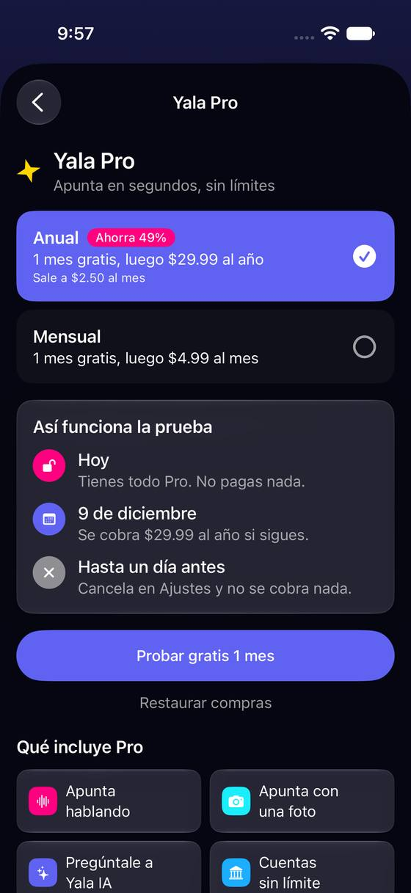
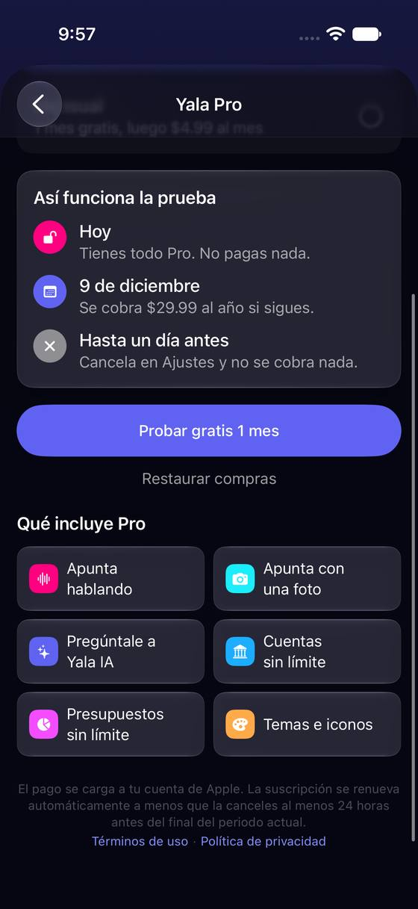
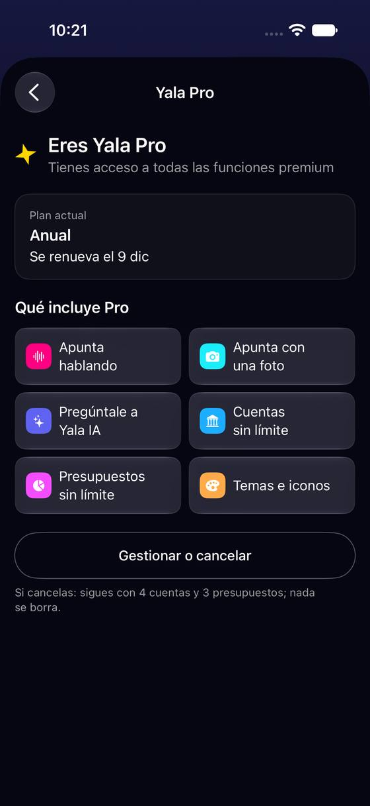
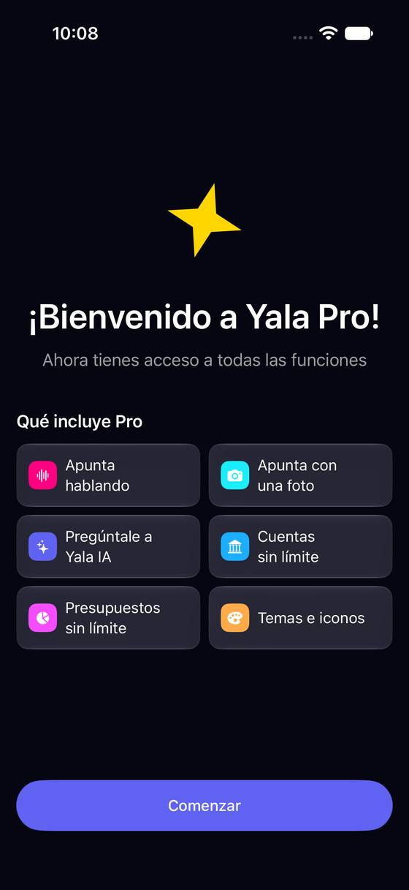

Yala Pro enseña primero el precio, y el límite del plan gratis solo se lo dice a quien ya pagó
Hoy
Capturas del simulador (app de origin/2.3, semillas de prueba). Pasos hoy: Saber qué le da Pro: 2 toques + 2 deslizamientos; el límite del plan gratis no sale en ningún momento





De dónde sale
- Captura Capturas r01: orden de la pantalla (planes, prueba, Probar gratis, Restaurar, Qué incluye Pro, letra legal).
- Código
FeatureGateService.swift:25-37: gratis, 4 cuentas y 3 presupuestos; solo Pro: voz, foto, iconos, temas, resumen IA y Yala IA. - Código
SubscriptionView.swift:113-119: «Si cancelas…» solo en la ramastore.isProUser. - Captura Captura r01: «Hasta un día antes · Cancela en Ajustes y no se cobra nada».
Las opciones
De 3 a 5 alternativas con el mismo caso. Desliza cada recorrido; el anillo cian marca dónde toca Andrea.
«Gratis o Pro» en una tabla, antes de los precios
Yala Pro abre con lo que ya tienes gratis y lo que suma Pro, una fila por cosa, con los límites en números (4 cuentas, 3 presupuestos). Debajo, «Así funciona la prueba» y los precios, como hoy. La fila de Ajustes deja de decir solo «Gratis».
| Gratis | Pro | |
|---|---|---|
| Cuentas | 4 | Sin límite |
| Presupuestos | 3 | Sin límite |
| Registrar a mano | ✓ | ✓ |
| Apuntar hablando | — | ✓ |
| Apuntar con una foto | — | ✓ |
| Preguntarle a Yala IA | — | ✓ |
| Temas e iconos | 4 | Todos |
| Grupos, exportar, importar | ✓ | ✓ |
A favor
- Andrea sabe en un vistazo qué pierde y qué gana: hoy el límite (4 cuentas, 3 presupuestos) solo se le dice a quien ya es Pro.
- Sirve igual para quien viene del aviso de límite que para quien entra a curiosear.
- Honesto: dice que gratis se registra, exporta y usa Grupos sin límite.
En contra
- Alarga la pantalla: el botón de probar baja una pantalla.
- Hay que mantener la tabla al día con
ProFeature(y en 16 idiomas).
«Lo que usas hoy» en tu plan, con números tuyos
En vez de una lista general, Yala Pro empieza por lo que Andrea usa: «2 de 4 cuentas», «2 de 3 presupuestos», «Probaste la voz 0 veces», con una barra cada uno. Debajo, solo lo que Pro le cambiaría a ella. La fila de Ajustes dice «Gratis · 2 de 4 cuentas».
A favor
- Responde la pregunta real: «¿me hace falta?» con sus propios números.
- La fila de Ajustes avisa antes de chocar con el límite.
- No presiona: dice cuánto le queda.
En contra
- Necesita contar cuentas y presupuestos al abrir (barato, pero es otro cálculo).
- Con cero cuentas o en Solo grupos, hay que decidir qué enseña.
- Puede leerse como «aún no te hace falta» y convertir menos.
Lo que incluye Pro arriba, explicado; los precios después
Solo se reordena la pantalla de hoy: «Qué incluye Pro» sube arriba y cada baldosa lleva una línea de ejemplo («Di “café 8 soles” y queda apuntado»). Los precios y la prueba bajan.
A favor
- Barato: es la misma pantalla, reordenada y con ejemplos.
- Cada beneficio se entiende sin probarlo.
En contra
- Sigue sin decir los límites del plan gratis ni que no se borra nada al volver.
- Un paso más hasta el precio para quien ya decidió.
Tu plan en una tarjeta propia, arriba de Ajustes
Pro sale de «Organización» (donde va junto a Cuentas y Etiquetas) a una tarjeta propia arriba de la lista. Gratis: lo que usa y «Qué cambia con Pro». Pro: el plan, cuándo se renueva y cuánto, y «Gestionar o cancelar». Se combina con C1 o C2.
A favor
- El caso 5 (cuándo se renueva) queda en la primera pantalla de Ajustes, con el precio.
- Pro deja de ser una fila más de «Organización».
- Se combina con cualquiera de las otras.
En contra
- Una tarjeta llamativa arriba de Ajustes puede sentirse como publicidad para quien no quiere Pro (L1-12 alejó la oferta).
- Ocupa alto en la primera pantalla.
Lado a lado
La última pantalla de cada recorrido, frente a hoy.
Comparación
| Opción | Pasos para el caso (maqueta) | Esfuerzo | Riesgo | Reabre |
|---|---|---|---|---|
| Hoy | Saber qué le da Pro: 2 toques + 2 deslizamientos; el límite del plan gratis no sale en ningún momento | — | — | — |
| C1 · «Gratis o Pro» en una tabla, antes de los precios | Saber qué le da Pro: 2 toques, se lee sin desplazar (hoy 2 toques + 2 deslizamientos, y el límite gratis no sale) | bajo | bajo | — |
| C2 · «Lo que usas hoy» en tu plan, con números tuyos | Saber qué le da Pro: 2 toques, sin desplazar | medio | bajo | — |
| C3 · Lo que incluye Pro arriba, explicado; los precios después | Saber qué le da Pro: 2 toques, sin desplazar; el límite gratis sigue sin salir | bajo | bajo | — |
| C4 · Tu plan en una tarjeta propia, arriba de Ajustes | Ver la renovación: 1 toque (igual que hoy, ahora con precio) | bajo | bajo | — |
Lente de perfiles
Perfiles simulados, no entrevistas Los siete perfiles de la revisión del usuario nuevo, usados como lentes. riesgo alto de trabarse · medio · bajo.
| Perfil | Hoy | C1 | C2 | C3 | C4 |
|---|---|---|---|---|---|
| P1 · Migrante de Excel | quiere ver el límite | tabla, como en Excel | — | no ve el límite | — |
| P2 · Principiante abrumado | precio sin saber qué es | lo lee en números | números suyos | ejemplos | a la vista |
| P3 · Anotador rápido que no lee | no baja hasta las baldosas | más que leer | una barra | — | sin entrar |
| P4 · Experto de otra app | busca la tabla | compara rápido | — | le falta el límite | precio y fecha |
| P5 · Llega por una invitación de grupo | ¿Grupos es de pago? | ve que Grupos es gratis | no tiene cuentas | — | «anuncio» de Pro |
| P6 · Varias monedas y tarjeta | ¿cuántas cuentas? | cuentas sin límite | cuántas le quedan | — | — |
| P7 · Texto grande, a veces en iPad | pantalla larga | tabla con AX | corto | — | grande |
Recomendación: C1
La tabla «Gratis o Pro» antes de los precios contesta la duda de Andrea con números y sin presionar, y es barata. C4 (la tarjeta del plan arriba de Ajustes) suma bien si se reordena Ajustes (problema 1, A2); C2 es la más personal, pero cuesta un cálculo y casos raros (cero cuentas, Solo grupos).
Qué decide Jürgen
- ¿Tabla «Gratis o Pro» antes de los precios (C1)? ¿O lo que usa cada uno (C2)?
- ¿Pro sale de «Organización» a una tarjeta propia arriba de Ajustes (C4)?
- ¿«Cancela en Ajustes» pasa a «Cancela en los Ajustes del iPhone»?
Revisión por vistas 2.3 · Perfil, Más, Ajustes generales, Pro y ayuda. Maquetas en HTML con datos ficticios: no son la app. Pasos contados sobre las maquetas; los de «Hoy», en el simulador o en el código citado.